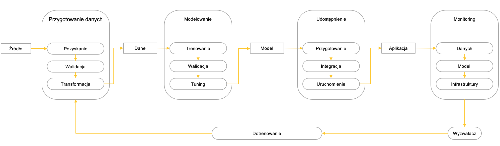
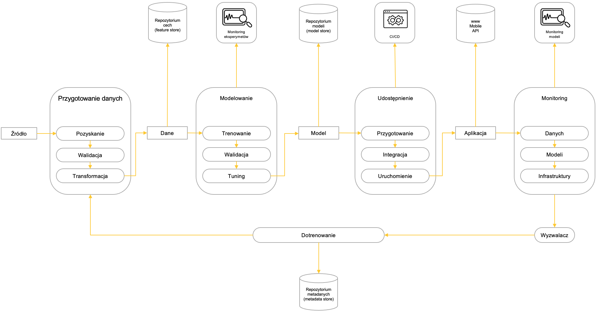
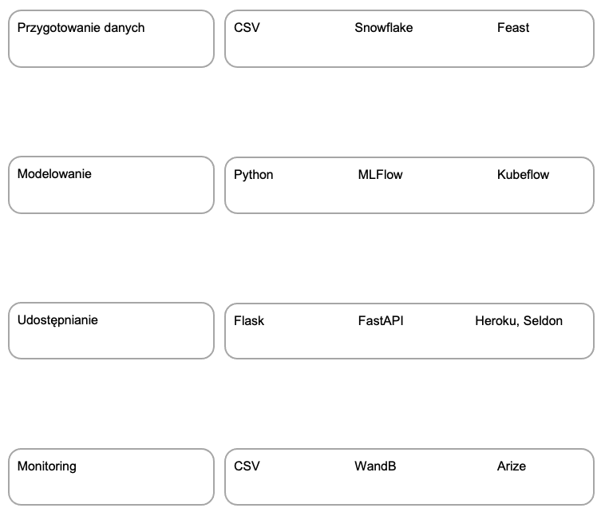
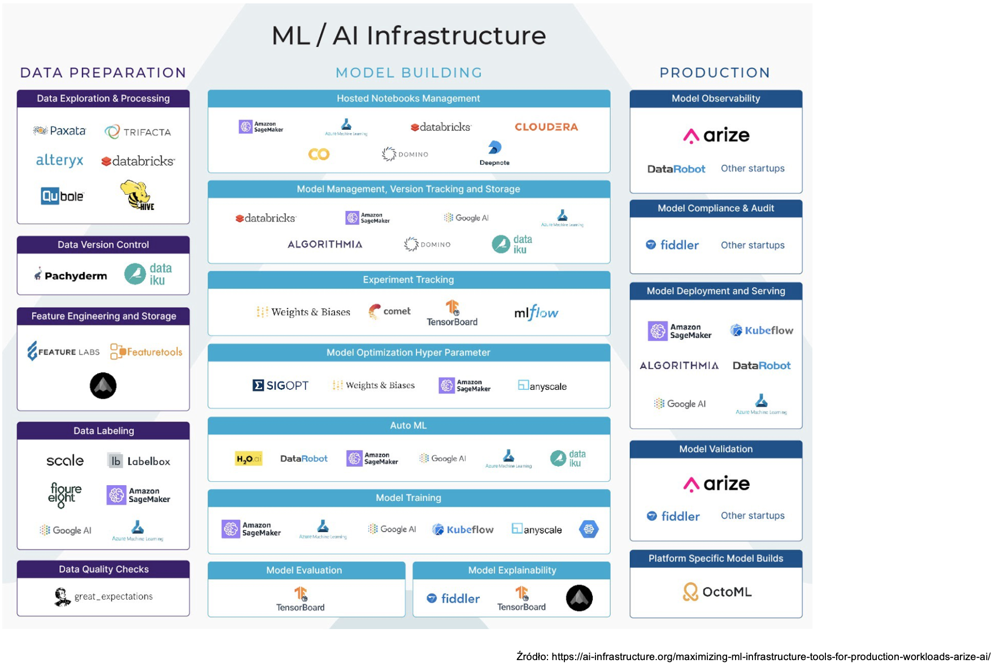

Rozdział 3 Cykl życia projektu Uczenia Maszynowego i modelowanie architektur
Na typowy projekt uczenia maszynowego składają się następujące etapy:
- Przygotowanie danych
- Modelowanie (trening i ewaluacja)
- Udostępnianie modelu
- Monitoring
- Dotrenowywanie.
Za realizację każdego z nich odpowiada najczęściej osobny komponent (na rysunku powyżej zaprezentowany w formie owalnej), który przyjmuje na wejściu oraz generuje na wyjściu tzw. artefakt (oznaczony jako prostokąt).

W realnych projektach sytuacja jest bardziej złożona: na przygotowanie danych, modelowanie, udostępnianie i monitoring składa się wiele etapów cząstkowych (realizowanych przez odpowiednie komponenty):
- Przygotowanie danych
- pozyskanie danych
- walidacja danych
- transformacja danych
- Modelowanie:
- trening i ewaluacja
- walidacja finalnego modelu
- tuning hiperparametrów
- Udostępnianie modelu
- przygotowanie do udostępnienia
- (ciągła) integracja (CI: Continuos Integration)
- (ciągłe) uruchamianie (CD: Continuos Deployment)
- Monitoring
- monitoring i identyfikacja dryfu danych
- monitoring i identyfikacja dryfu modeli
- monitoring infrastruktury
- Dotrenowywanie
- generowanie sygnału dotrenowania
- wybór nowych danych treningowych
- dotrenowanie.

Realizację tych procesów wspiera wiele dedykowanych systemów, wyspecjalizowanych w realizacji konkretnych zadań. Szczególnie istotną rolę odgrywają:
- repozytoria cech (ang. feature stores)
- systemy monitoringu eksperymentów
- repozytoria modeli (ang. model stores)
- systemy ciągłej integracji i udostępniania (ang. continuous integration (CI) and deployment (CD))
- systemy monitorujące modele
- repozytoria metadanych generowanych przez cały proces (ang. metadata stores).

Wybór technologii wykorzystanych do implementacji poszczególnych komponentów zależy od stopnia złożoności projektu. W prostych przedsięwzięciach można z powodzeniem wykorzystać pliki CSV, skrypty Python czy aplikacje typu Flask, bardziej złożone wymagają wdrożenia dedykowanych rozwiązań dostępnych za darmo (np. MLFlow, FastApi czy darmowa wersja WandB.ai), zaś zaawansowane dedykowanych systemów takich jak Feast, Kubeflow, Heroku czy Arize.

Pejzaż dostępnych w tym zakresie rozwiązań jest bardzo dynamiczny: pojawia się tu coraz więcej nowych rozwiązań, czemu towarzyszy mniej lub bardziej dynamiczny rozwój już istniejących.
Przydatne źródła
- Przykład kompletnej architektury projektu uczenia maszynowego, ze świetnie opisanymi poszczególnymi etapami jej konstrukcji, opisany jest tutaj.
- Bardzo dobrym wprowadzenie w zagadnienie cyklu życia projektu maszynowego, i ogólniej w tematykę MLOps jest artykuł dostępny tutaj.
- Nieco bardziej rozbudowane wprowadzenie do różnych poziomów automatyzacji procesów MLOps można znaleźć tutaj:
- Interesujący przegląd narzędzi wspomagających zarządzanie cyklem życia oraz poszczególnymi etapami projektu data science jest dostępny tutaj.